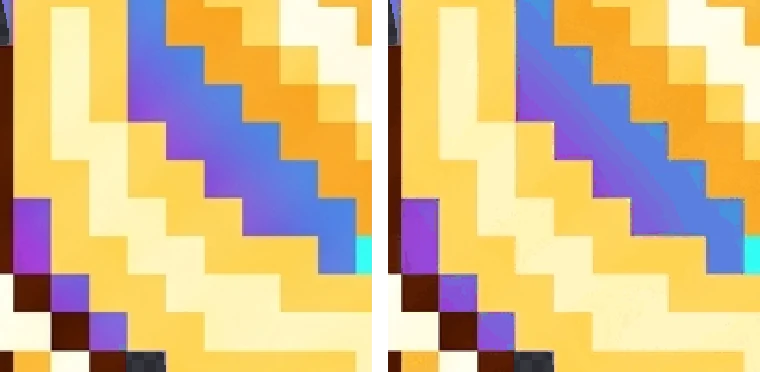

PNG vs WebP vs JPG: File Sizes Measured on the Same Images
You've probably heard that WebP is smaller than PNG and that reducing to 256 colors makes files lighter. To check, we saved three background-removed characters in four formats at several sizes and measured every file. Most results were as expected, but one wasn't.
How we measured
The subjects are three 2048×2048 transparent PNGs made with Nano Banana and cleaned up with BGPeel: a simple green slime, a detailed plant monster and a gold spirit full of light effects. Each was scaled to its original size, 1024, 512, 256 and 128px, and saved in four formats:
- PNG: standard lossless.
- PNG, 256 colors: reduced to a 256-color palette with UPNG.js (BGPeel's “Reduce to 256 colors”).
- WebP: Chrome's lossless WebP (quality 1).
- JPG: quality 0.92, with transparent areas filled white.
Every file was produced in Chrome by BGPeel's own export code, so downloading with the same settings in BGPeel gives the same sizes. Other programs compress differently and will produce somewhat different numbers.
Newer formats such as AVIF were left out: BGPeel doesn't save AVIF yet, and whether a browser can encode AVIF varies. The three characters were chosen because they differ in exactly the traits that drive file size. The slime has large flat areas and a lot of transparency, the plant has dense vines and teeth, and the spirit's light effects are made of countless in-between colors.
Results at original size (2048px)
| Character | PNG | PNG 256 colors | WebP | JPG |
|---|---|---|---|---|
| Slime (simple) | 1.17MB | 434KB (−64%) | 1.61MB (+38%) | 101KB |
| Plant (detailed) | 3.34MB | 771KB (−77%) | 2.06MB (−38%) | 536KB |
| Spirit (light effects) | 3.41MB | 653KB (−81%) | 2.17MB (−36%) | 459KB |
Percentages are relative to PNG. For the plant and the spirit, WebP was 36–38% smaller than PNG, but for the slime WebP was 38% larger. A simple drawing made of large flat areas and transparency already suits PNG's compression well, and lossless WebP apparently had nothing more to squeeze. “WebP is always smaller” didn't hold in this test.
Results at 512px, a common web size
| Character | PNG | PNG 256 colors | WebP | JPG |
|---|---|---|---|---|
| Slime | 104KB | 38KB (−63%) | 85KB (−18%) | 16KB |
| Plant | 302KB | 75KB (−75%) | 227KB (−25%) | 81KB |
| Spirit | 305KB | 64KB (−79%) | 209KB (−32%) | 81KB |
At 512px, WebP beat PNG for the slime too, by 18%. Scaling blends the edges and adds intermediate colors, weakening the conditions that favored PNG. At 256px the slime flipped back, with WebP 4% larger, while the plant and the spirit were 16–26% smaller as WebP.
Size matters more than format
Read the tables vertically and a bigger effect appears. For all three characters, every halving of width and height cut the PNG to 27–32% of its previous size: the pixel count drops to a quarter, and the file shrinks a little less than that. Take the spirit: the 3.41MB 2048px PNG dropped to 305KB at 512px, a 91% reduction from resizing alone, and adding 256 colors brought it to 64KB, 98% lighter than the original. That dwarfs the 30–40% you gain by switching formats. If you're uploading 2048px images that appear at 200px on a web page, fix the size before worrying about the format. Even for high-density screens, twice the displayed size is enough.
256-color PNG made the biggest difference
At every size and for every character, the 256-color PNG shrank the most: 64–81% at full size and 63–79% at 512px, with transparency intact. What about quality? The spirit image originally had 98,971 distinct colors. Reducing them to 256 changed visible pixels by just 2.9 levels per channel on average (on a 0–255 scale).

Even the region with the largest difference is hard to tell apart. Pixel art uses few colors and has crisp boundaries, so it suits 256-color conversion very well. Photos and illustrations with wide smooth gradients can show banding, so zoom in and check.
JPG is smallest but loses transparency
JPG was the smallest at every size for the simple slime, and at full size for the plant and the spirit too. But JPG cannot store transparency, so the removed background is filled with white. On a white web page you won't notice, but on a dark background or over another image a white box appears.
And for the detailed plant and spirit at 512px and below, the JPG was actually larger than the 256-color PNG; at 512px the spirit was 81KB as JPG and 64KB as a 256-color PNG. Even when you don't need transparency, a 256-color PNG can be smaller and cleaner for pixel art.
Bonus: removing the background shrinks the file
Saved the same way (Chrome PNG), the background-removed results were smaller than the magenta originals. The slime went from 4.51MB to 1.17MB (−74%), the plant from 5.69MB to 3.34MB (−41%) and the spirit from 5.44MB to 3.41MB (−37%). An AI-generated “solid” background carries faint invisible noise that compresses poorly, while transparent pixels all share one value and take almost no space. The slime, with the most background, benefited most.
Which format to choose
| Use | Recommended | Why |
|---|---|---|
| Game asset masters, files you'll edit | PNG | Lossless, opens everywhere |
| Pixel art, icons, emoticons | PNG, 256 colors | Keeps transparency, 64–81% smaller, barely visible difference |
| Transparent images for a website | WebP or 256-color PNG | WebP wins on complex images; for simple ones, export both and compare |
| Photos without transparency | JPG | Smallest |
BGPeel keeps results in memory at full resolution and applies size and format when you download. You can switch “Format” and “256 colors” and download the same image several times, comparing the sizes shown on each card. In browsers that can't save WebP, such as Safari, choosing WebP gives you a PNG. How resizing works is covered in Resize images.